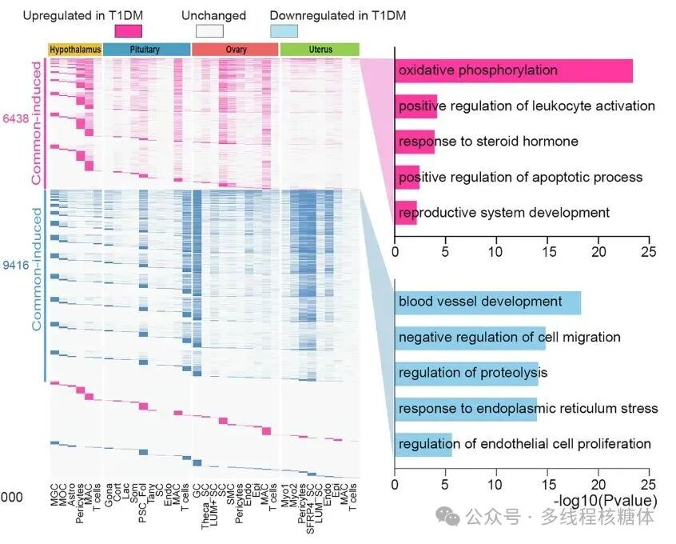
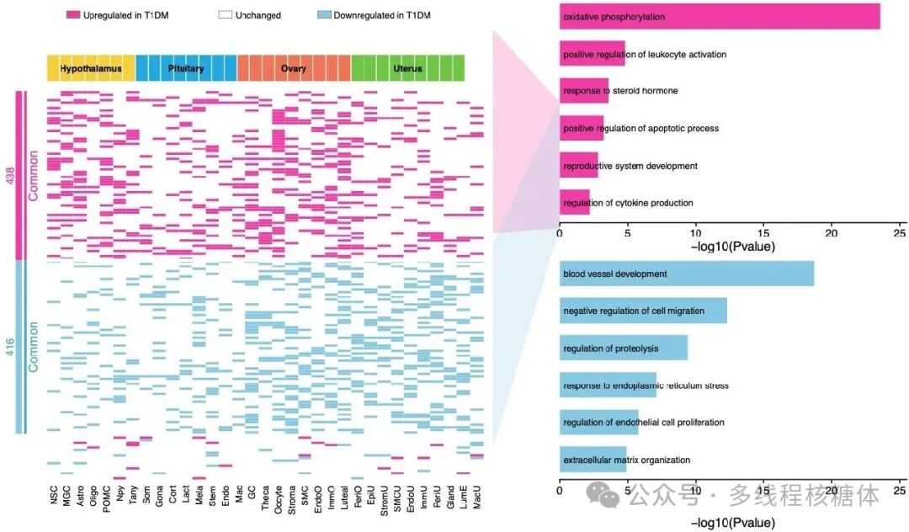

摘要LLM 归库摘要
- 核心内容： 复现高分论文中的组合 Panel：把差异基因热图、组织来源注释条、共同变化基因模块标记、GO 富集条形图放进同一套视觉结构；GO 条目文字直接叠加在条形区域内部，接近论文原图排版。
- 适用场景： 展示多个组织中共同变化的基因，并将上调/下调基因对应的功能富集结果同步呈现。
- 输入： 3 个 csv——
input_cell_annotation.csv（组织/细胞类型/顺序）、input_deg_heatmap.csv（基因/模块/细胞类型/组织/差异状态）、input_go_enrichment.csv（模块/GO 条目/-log10P）。- 输出：
deg_heatmap_go_panel.png/- 关键参数/步骤： ①固定基因/细胞顺序；②热图配色（粉色=上调/白=未变/蓝=下调）+ 组织独立配色；③
geom_tile热图 +geom_rect模块条；④GO 条形图用geom_text把文字叠进条内；⑤polygonGrob连接带衔接左侧热图与右侧 GO。- 常见错误： 基因/细胞顺序不固定会导致布局漂移；GO 文字用默认 y 轴标签会多出空白栏；热图与组织注释配色混用会混淆信息。
- 与口腔生信连接： 牙周炎/OSCC 多组织或分组比较时，可用此模板把差异基因热图与 GO 富集合并成单个发表级 Panel；示例表格需自行换成自己数据。
- 下一步处理： 暂未试用；R 脚本已同步至远程代码库
02_可视化/02_热图与GO富集/，可按需调用。- 归库说明： 分类到 03 生信教程与工具库（可视化与配色），置信度 0.9，理由：高分 Panel 复现教程、含完整可复用 R 代码。
高分 Panel 复现：差异基因热图 + GO 富集
来源公众号：Xming同学·多线程核糖体（2026-08-12）
这张图的重点不只是热图本身，而是把差异基因状态、组织来源、共同变化基因和 GO 富集结果放在同一套视觉结构里。右侧条形图采用文字直接叠加在条形区域内的方式，更接近论文原图的排版效果。
图片来源#
| 项目 | 内容 |
|---|---|
| 文章 | Single-cell atlas of reproductive endocrine organs reveals transcriptomic responses to type 1 diabetes mellitus in nonhuman primates |
| 期刊/年份 | Cell Discovery, 2026 |
| 图形内容 | 差异表达热图与 GO 富集组合图 |
| DOI/链接 | Nature 文章链接 |
这类图用于展示多个组织中共同变化的基因，并将上调或下调基因对应的功能富集结果同步呈现。左侧负责表达基因状态，右侧负责解释这些基因可能涉及的生物学过程。
原图与复现效果#
原图（论文 Fig.）#

复现结果#

图片解读：整张图四个部分#
- 顶部组织注释条 —— 不同颜色代表 Hypothalamus、Pituitary、Ovary 和 Uterus 等组织来源。
- 中间差异基因热图 —— 横轴是细胞类型或组织相关细胞群，颜色表示基因在 T1DM 条件下的变化状态。
- 左侧共同基因模块标记 —— 粉色代表共同上调基因，蓝色代表共同下调基因，并标注相应基因数量。
- 右侧 GO 富集条形图 —— 横轴为
-log10(Pvalue)。上方粉色为共同上调基因富集结果，下方蓝色为共同下调基因富集结果。GO 条目文字直接放在条形图区域内，减少额外标签栏空白。
输入数据（3 个 csv，自行替换）#
1. input_cell_annotation.csv#
| 列名 | 含义 |
|---|---|
tissue |
组织或样本来源 |
cell_type |
细胞类型名称 |
cell_index |
细胞类型在图中的排列顺序 |
2. input_deg_heatmap.csv#
| 列名 | 含义 |
|---|---|
gene |
基因名称 |
module |
基因所属模块，如 Common up、Common down |
cell_type |
细胞类型 |
tissue |
组织来源 |
regulation |
差异状态：上调、未变化或下调 |
3. input_go_enrichment.csv#
| 列名 | 含义 |
|---|---|
module |
对应基因模块 |
term |
GO 富集条目 |
neg_log10_p |
-log10(Pvalue) |
每一行热图数据代表一个基因在一个细胞类型中的差异状态；每一行 GO 数据代表一个富集条目及其显著性。 示例数据需自行准备（公众号后台可领，或用自己数据替换）。
R 代码要点拆解#
第一步：固定基因和细胞类型顺序#
热图顺序需提前固定，否则不同数据集重跑时布局会变化。
cell_order <- cell_anno$cell_type
gene_order <- deg |>
distinct(gene, module) |>
mutate(module = factor(module, levels = c("Common up", "Common down", "Other"))) |>
arrange(module, gene) |>
pull(gene)
plot_dat <- deg |>
mutate(
cell_type = factor(cell_type, levels = cell_order),
gene = factor(gene, levels = rev(gene_order)),
regulation = factor(regulation, levels = c("Upregulated in T1DM", "Unchanged", "Downregulated in T1DM"))
)
第二步：热图和组织注释配色#
热图中粉色/蓝色突出差异方向，白色保留未变化区域；顶部组织条用独立配色，避免混淆。
reg_cols <- c(
"Upregulated in T1DM" = "#f23aa5",
"Unchanged" = "#ffffff",
"Downregulated in T1DM" = "#85c8e4"
)
tissue_cols <- c(
"Hypothalamus" = "#f5cf3d",
"Pituitary" = "#24a8df",
"Ovary" = "#f07557",
"Uterus" = "#70c644"
)
第三步：热图和模块标记#
p_heat <- ggplot(plot_dat, aes(cell_type, gene, fill = regulation)) +
geom_tile(color = "#f2f2f2", linewidth = 0.02) +
scale_fill_manual(values = reg_cols, guide = "none") +
scale_x_discrete(expand = c(0, 0)) +
scale_y_discrete(expand = c(0, 0)) +
labs(x = NULL, y = NULL) +
theme_minimal(base_size = 7) +
theme(
panel.grid = element_blank(),
axis.text.y = element_blank(),
axis.ticks = element_blank(),
axis.text.x = element_text(angle = 90, vjust = 0.5, hjust = 1, size = 4.8, color = "black"),
plot.margin = margin(0, 0, 0, 0)
)
第四步：GO 条形图（核心）#
GO 文字不再用默认 y 轴标签，而是作为独立文字图层直接叠加到条形图内部：
go_plot <- function(df, fill_col) {
df <- df |> mutate(term = as.character(term), y = rev(seq_along(term)))
ggplot(df, aes(y = y)) +
geom_rect(aes(xmin = 0, xmax = neg_log10_p, ymin = y - 0.34, ymax = y + 0.34),
fill = fill_col, color = NA) +
geom_text(aes(x = 0.28, y = y, label = term), hjust = 0, vjust = 0.5,
size = 1.62, color = "black") +
scale_x_continuous(limits = c(0, 25), breaks = seq(0, 25, 5), expand = expansion(mult = c(0, 0.02))) +
scale_y_continuous(limits = c(0.45, max(df$y) + 0.55), breaks = NULL, expand = c(0, 0)) +
labs(x = "-log10(Pvalue)", y = NULL) +
theme_classic(base_size = 8) +
theme(
axis.text.y = element_blank(),
axis.text.x = element_text(size = 6.3, color = "black"),
axis.title.x = element_text(size = 7.2, color = "black", margin = margin(t = 1)),
axis.line.y = element_blank(), axis.ticks.y = element_blank(),
axis.line.x = element_line(linewidth = 0.3), axis.ticks.x = element_line(linewidth = 0.3),
plot.margin = margin(0, 0, 0, 0)
)
}
第五步：连接带 + 组合#
polygonGrob 绘制上下连接带，衔接左侧热图与右侧 GO 图，最后用 patchwork 组合：
connector <- function(fill_col, ytop, ybottom) {
polygonGrob(
x = unit(c(0, 1, 1, 0), "npc"),
y = unit(c(ytop, 0.78, 0.52, ybottom), "npc"),
gp = gpar(fill = alpha(fill_col, 0.24), col = NA)
)
}
完整代码见下方"完整代码"或远程代码库 02_可视化/02_热图与GO富集/。
完整代码#
library(dplyr)
library(readr)
library(ggplot2)
library(patchwork)
library(grid)
library(scales)
deg <- read_csv("input_deg_heatmap.csv", show_col_types = FALSE)
cell_anno <- read_csv("input_cell_annotation.csv", show_col_types = FALSE)
go <- read_csv("input_go_enrichment.csv", show_col_types = FALSE)
cell_order <- cell_anno$cell_type
gene_order <- deg |>
distinct(gene, module) |>
mutate(module = factor(module, levels = c("Common up", "Common down", "Other"))) |>
arrange(module, gene) |>
pull(gene)
plot_dat <- deg |>
mutate(
cell_type = factor(cell_type, levels = cell_order),
gene = factor(gene, levels = rev(gene_order)),
regulation = factor(regulation, levels = c("Upregulated in T1DM", "Unchanged", "Downregulated in T1DM"))
)
module_df <- plot_dat |>
distinct(gene, module) |>
mutate(y = as.numeric(gene)) |>
group_by(module) |>
summarise(ymin = min(y) - 0.5, ymax = max(y) + 0.5, .groups = "drop")
reg_cols <- c(
"Upregulated in T1DM" = "#f23aa5",
"Unchanged" = "#ffffff",
"Downregulated in T1DM" = "#85c8e4"
)
tissue_cols <- c(
"Hypothalamus" = "#f5cf3d",
"Pituitary" = "#24a8df",
"Ovary" = "#f07557",
"Uterus" = "#70c644"
)
theme_clean <- theme_void(base_size = 8) +
theme(plot.margin = margin(0, 0, 0, 0))
legend_dat <- tibble(
x = c(0.02, 0.42, 0.68),
label = names(reg_cols),
fill = unname(reg_cols)
)
p_legend <- ggplot(legend_dat, aes(x = x, y = 0.52)) +
geom_tile(aes(fill = label), width = 0.034, height = 0.20, color = "grey40", linewidth = 0.13) +
geom_text(aes(x = x + 0.026, label = label), hjust = 0, size = 1.85, color = "black") +
scale_fill_manual(values = reg_cols, guide = "none") +
coord_cartesian(xlim = c(0, 1), ylim = c(0, 1), clip = "off") +
theme_clean
p_tissue <- ggplot(cell_anno, aes(x = factor(cell_type, levels = cell_order), y = 1, fill = tissue)) +
geom_tile(color = "white", linewidth = 0.22) +
geom_text(
data = cell_anno |> group_by(tissue) |> summarise(x = mean(as.numeric(factor(cell_type, levels = cell_order))), .groups = "drop"),
aes(x = x, y = 1, label = tissue), inherit.aes = FALSE, size = 1.75, fontface = "bold", color = "black"
) +
scale_fill_manual(values = tissue_cols, guide = "none") +
scale_x_discrete(expand = c(0, 0)) +
scale_y_continuous(expand = c(0, 0)) +
theme_void(base_size = 8) +
theme(plot.margin = margin(0, 0, 0, 0))
p_heat <- ggplot(plot_dat, aes(cell_type, gene, fill = regulation)) +
geom_tile(color = "#f2f2f2", linewidth = 0.02) +
geom_hline(yintercept = max(plot_dat |> filter(module == "Common down") |> mutate(y = as.numeric(gene)) |> pull(y)) + 0.5,
color = "white", linewidth = 0.8) +
geom_hline(yintercept = min(plot_dat |> filter(module == "Common up") |> mutate(y = as.numeric(gene)) |> pull(y)) - 0.5,
color = "white", linewidth = 0.8) +
scale_fill_manual(values = reg_cols, guide = "none") +
scale_x_discrete(expand = c(0, 0)) +
scale_y_discrete(expand = c(0, 0)) +
labs(x = NULL, y = NULL) +
theme_minimal(base_size = 7) +
theme(
panel.grid = element_blank(),
axis.text.y = element_blank(),
axis.ticks = element_blank(),
axis.text.x = element_text(angle = 90, vjust = 0.5, hjust = 1, size = 4.8, color = "black"),
plot.margin = margin(0, 0, 0, 0)
)
p_side <- ggplot(module_df) +
geom_rect(aes(xmin = 0.28, xmax = 0.42, ymin = ymin, ymax = ymax, fill = module), color = NA) +
geom_segment(aes(x = 0.50, xend = 0.50, y = ymin, yend = ymax, color = module), linewidth = 0.65) +
annotate("text", x = 0.15,
y = mean(c(min(module_df$ymin[module_df$module == "Common up"]), max(module_df$ymax[module_df$module == "Common up"]))),
label = "438", color = "#f23aa5", size = 2.15, angle = 90) +
annotate("text", x = 0.15,
y = mean(c(min(module_df$ymin[module_df$module == "Common down"]), max(module_df$ymax[module_df$module == "Common down"]))),
label = "416", color = "#4fa7cc", size = 2.15, angle = 90) +
annotate("text", x = 0.68,
y = mean(c(min(module_df$ymin[module_df$module == "Common up"]), max(module_df$ymax[module_df$module == "Common up"]))),
label = "Common", color = "#f23aa5", size = 2.35, angle = 90) +
annotate("text", x = 0.68,
y = mean(c(min(module_df$ymin[module_df$module == "Common down"]), max(module_df$ymax[module_df$module == "Common down"]))),
label = "Common", color = "#4fa7cc", size = 2.35, angle = 90) +
scale_fill_manual(values = c("Common up" = "#f23aa5", "Common down" = "#85c8e4", "Other" = "white"), guide = "none") +
scale_color_manual(values = c("Common up" = "#f23aa5", "Common down" = "#4fa7cc", "Other" = "white"), guide = "none") +
coord_cartesian(xlim = c(0, 1), ylim = range(module_df$ymin, module_df$ymax), expand = FALSE) +
theme_void(base_size = 8)
go_plot <- function(df, fill_col) {
df <- df |> mutate(term = as.character(term), y = rev(seq_along(term)))
ggplot(df, aes(y = y)) +
geom_rect(aes(xmin = 0, xmax = neg_log10_p, ymin = y - 0.34, ymax = y + 0.34),
fill = fill_col, color = NA) +
geom_text(aes(x = 0.28, y = y, label = term), hjust = 0, vjust = 0.5, size = 1.62, color = "black") +
scale_x_continuous(limits = c(0, 25), breaks = seq(0, 25, 5), expand = expansion(mult = c(0, 0.02))) +
scale_y_continuous(limits = c(0.45, max(df$y) + 0.55), breaks = NULL, expand = c(0, 0)) +
labs(x = "-log10(Pvalue)", y = NULL) +
theme_classic(base_size = 8) +
theme(
axis.text.y = element_blank(),
axis.text.x = element_text(size = 6.3, color = "black"),
axis.title.x = element_text(size = 7.2, color = "black", margin = margin(t = 1)),
axis.line.y = element_blank(), axis.ticks.y = element_blank(),
axis.line.x = element_line(linewidth = 0.3), axis.ticks.x = element_line(linewidth = 0.3),
plot.margin = margin(0, 0, 0, 0)
)
}
p_go_up <- go_plot(go |> filter(module == "Common up"), "#f23aa5")
p_go_down <- go_plot(go |> filter(module == "Common down"), "#85c8e4")
p_go <- p_go_up / p_go_down
connector <- function(fill_col, ytop, ybottom) {
polygonGrob(
x = unit(c(0, 1, 1, 0), "npc"),
y = unit(c(ytop, 0.78, 0.52, ybottom), "npc"),
gp = gpar(fill = alpha(fill_col, 0.24), col = NA)
)
}
p_link <- ggplot() +
annotation_custom(connector("#f23aa5", 0.93, 0.51), xmin = 0, xmax = 1, ymin = 0, ymax = 1) +
annotation_custom(connector("#85c8e4", 0.49, 0.07), xmin = 0, xmax = 1, ymin = 0, ymax = 1) +
coord_cartesian(xlim = c(0, 1), ylim = c(0, 1), expand = FALSE) +
theme_void()
legend_row <- plot_spacer() + p_legend + plot_spacer() + plot_layout(widths = c(0.08, 1, 0.02))
tissue_row <- plot_spacer() + p_tissue + plot_spacer() + plot_layout(widths = c(0.08, 1, 0.02))
heatmap_row <- p_side + p_heat + plot_layout(widths = c(0.10, 1))
left_block <- legend_row / tissue_row / heatmap_row + plot_layout(heights = c(0.10, 0.07, 1))
p <- wrap_plots(left_block, p_link, p_go, ncol = 3, widths = c(1.08, 0.15, 0.78))
ggsave("deg_heatmap_go_panel.png", p, width = 7.2, height = 4.35, dpi = 450, bg = "white")
ggsave("deg_heatmap_go_panel.pdf", p, width = 7.2, height = 4.35, bg = "white")
使用说明（可复用）
- 准备 3 个 csv（
input_cell_annotation.csv/input_deg_heatmap.csv/input_go_enrichment.csv），按上文列结构整理自己数据。 - 直接复制完整代码到 RStudio 运行，或从远程代码库
02_可视化/02_热图与GO富集/取.R脚本。 - 若组织种类不同，修改
tissue_cols；若差异状态标签不同，修改reg_cols和levels。 - 基因数量注释（438/416）为示例值，运行前按实际模块大小替换。
参考链接
- 原文：Cell Discovery, 2026《Single-cell atlas of reproductive endocrine organs...》（Nature 文章链接）
- 公众号：Xming同学·多线程核糖体
本页 R 代码已同步至远程代码库 hz-bioinfo-codes/02_可视化/02_热图与GO富集/。